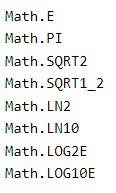
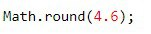
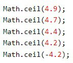

JavaScript Math Object
Math Properties (Constants)
Example
Math.E - zreturns Euler's number
Math.PI - returns PI
Math.SQRT2 - returns the square root of 2
Math.SQRT1_2 - returns the square root of 1/2
Math.LN2 - returns the natural logarithm of 2
Math.LN10 - returns the natural logarithm of
10
Math.LOG2E - returns base 2 logarithm of E
Math.LOG10E - returns base 10 logarithm of E
Number to Integer
| Math.round(x) | Returns x rounded to its nearest integer |
| Math.ceil(x) | Returns x rounded up to its nearest integer |
| Math.floor(x) | Returns x rounded down to its nearest integer |
| Math.trunc(x) | Returns the integer part of x |
Math.round()
Math.round(x) returns the nearest integer:
Example
Math.ceil()
Math.ceil()returns the value of x rounded up
to its nearest integer:
Example
Math.floor()
Math.floor(x)
returns the value of x rounded down to its nearest integer:
Example